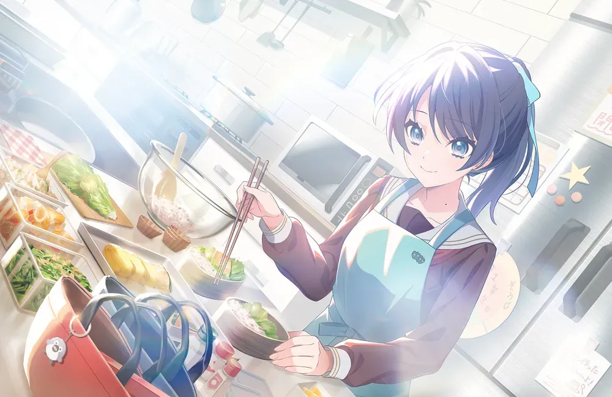
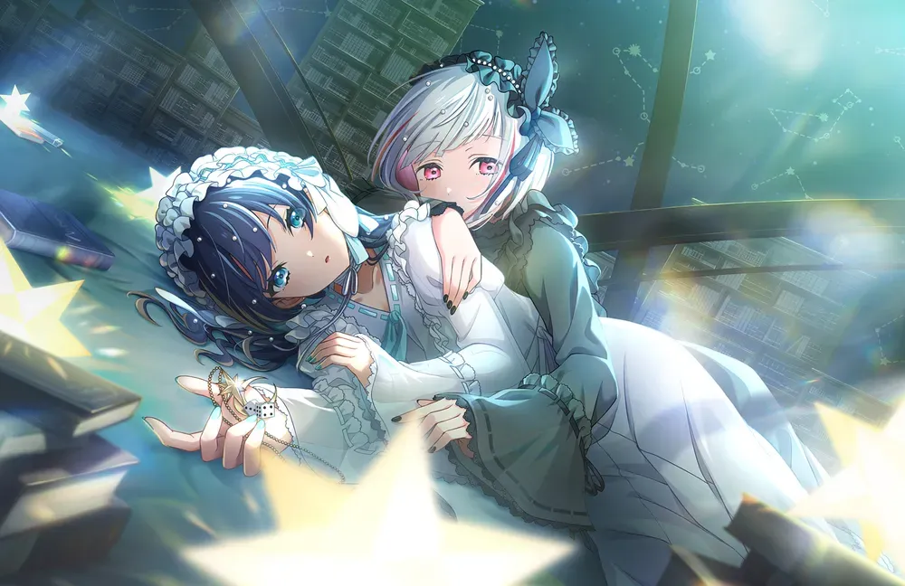
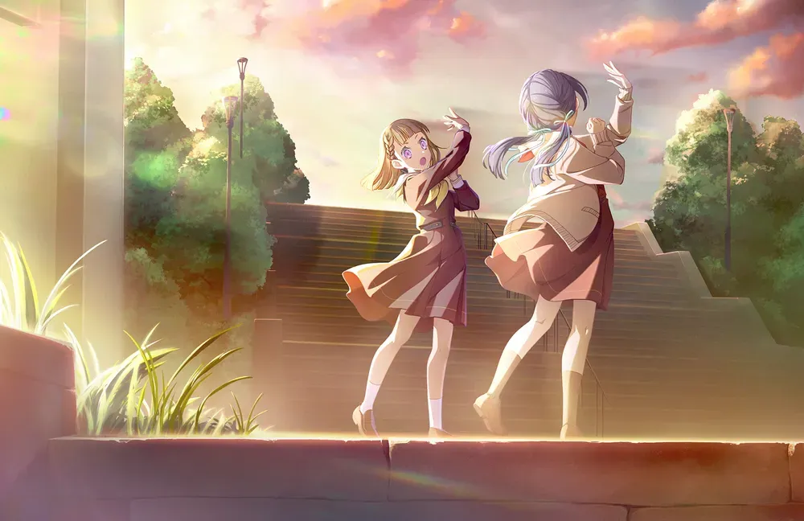
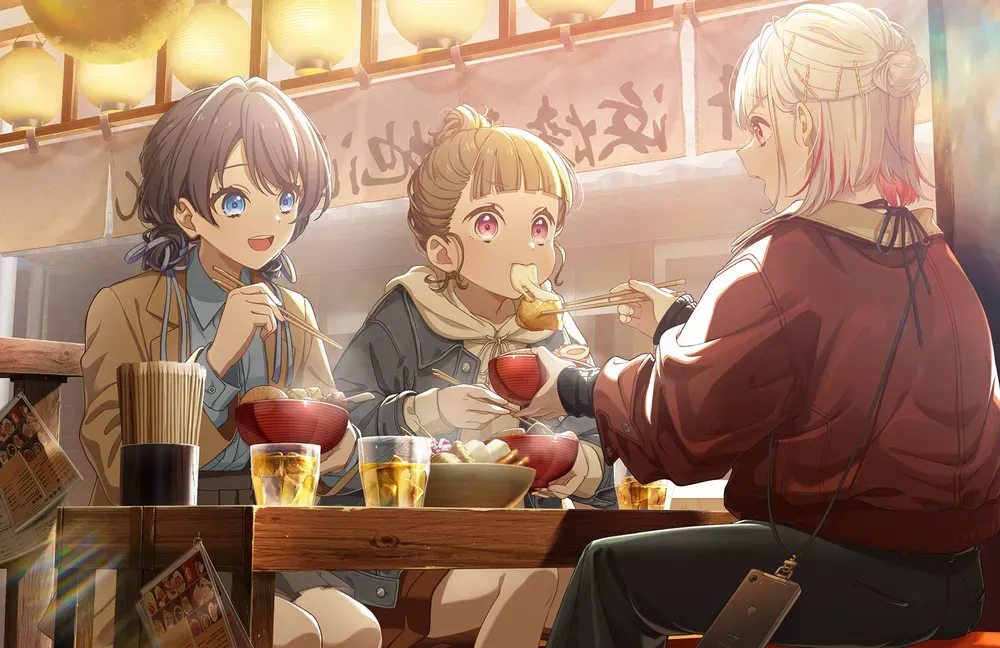
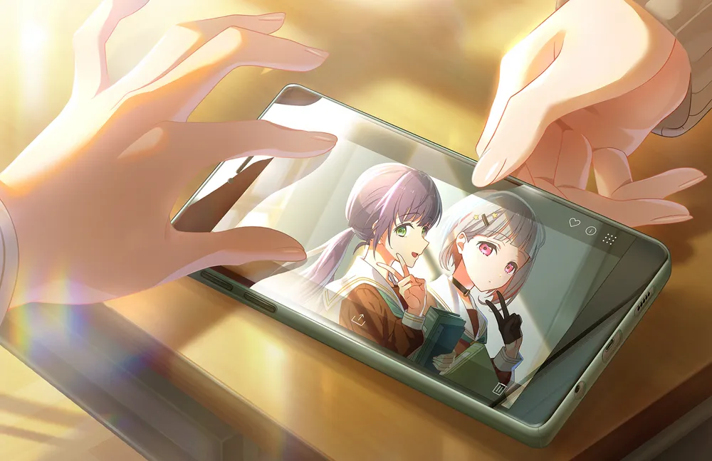
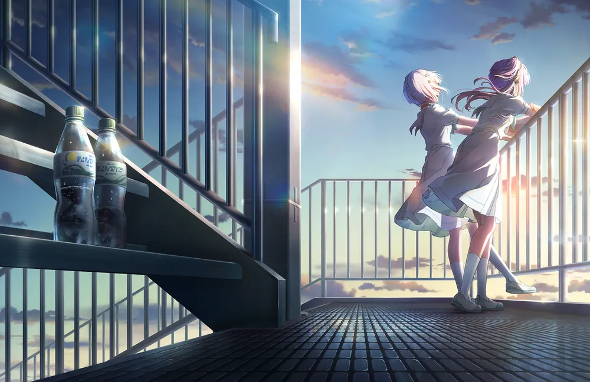
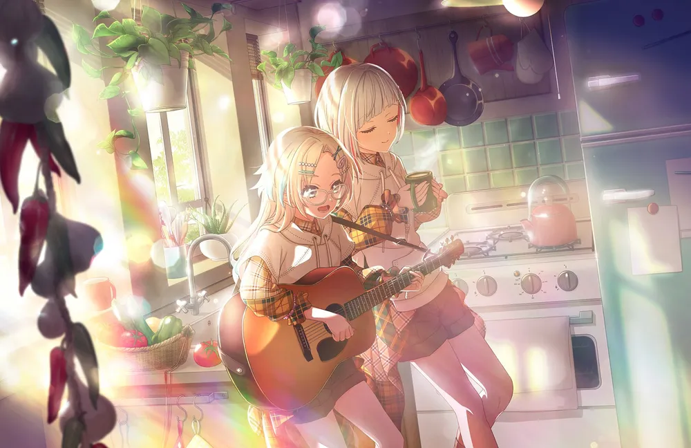
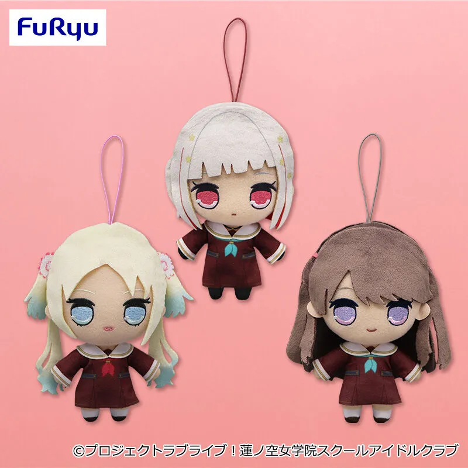

하스노소라 여학원의 102기생.
주위에서는 천재라고 불릴 정도의 퍼포머인 한편,
마이페이스한 성격으로 독특한 워드 센스를 가지고 있고, 외로움을 잘 타고 다정다감한 면이 있다. 스쿨 아이돌을 정말 좋아하고, 자신이 그 중 하나였다는 것을 진심으로 자랑스럽게 생각하고 있다.
2.2. 외형
Prism Echo
날개 la liberté+
신장이 171cm로, 러브라이브 시리즈 캐릭터 중 최장신이다.[11] 러브라이브 시리즈 최초로 170cm 이상의 신장을 기록한 캐릭터이기도 하다. 주연 캐릭터 50명[12]의 신장 평균인 158.7cm[13] 기준으로 무려 12.3cm라는 편차를 자랑한다. 그러나 체형은 장신 캐릭터 중에서는 드물게 상당히 마른 편이다. 그 덕분에 가뜩이나 큰 키가 더 커 보이는 효과가 있으며 핏이 좋아 어지간한 옷은 잘 소화해 낸다.[14] 현실의 모델들도 키가 크고 늘씬하며 바스트가 작은 사람들이 많은 것을 생각하면 된다.[15] 머리가 하얀색이라 어울리는 색이 많은 것은 덤. 만약 아사카 카린처럼 모델 활동을 하면 좋은 라이벌이 될 것 같다. AURORA FLOWER 카드의 특훈 전 일러스트에서 복근이 생기면서 근육미녀 속성도 붙었다.
카호가 말하길, 굉장한 미인이고 얼굴도 작다고 한다. 그야말로 최적의 모델 체형인 셈이다.
안쪽은 빨간색, 바깥쪽은 하얀색인 시크릿 투톤 머리카락을 가지고 있다. 머리의 끝부분과 뿌리 쪽의 색이 다른 경우[16]는 있지만 주역 캐릭터가 이런 헤어 스타일을 한 것은 처음이다.[17][18] 바깥 부분에도 약간씩 빨간색으로 브릿지가 들어가 있다. 빨간 머리와 하얀 머리 중 어느 쪽이 자연모인지는 불명이며 아예 시크릿 투톤 자체가 자연모일 수도 있다.
앞머리는 오른쪽이 더 긴 비대칭 앞머리이며 오른쪽은 눈 바로 위까지 올라올 정도로 길지만 왼쪽은 눈썹 위까지 올라오는 처피뱅 수준으로 짧다.
머리카락이 짧다 보니 간혹 바깥쪽에 있는 머리가 약간 붕 뜨기도 한다. 특히 링크라의 3D 모델링에서 두드러지는 편이다.
눈매는 둥글지만 양끝이 다소 째졌다. 하스동 내에서 가장 눈매가 둥근 코즈에와 비교하면 알 수 있다. 쌍꺼풀이 여러 겹이다.
홍채는 빨간색으로, 때와 장소에 따라 핑크에 가까운 투명한 빨간색이 된다. 각종 일러스트보다 링크라의 3D 모델링에서 더 진하다.
하스노소라 멤버들 중 유일하게 교복과 검은색 메리 제인을 신는 캐릭터다. 다른 멤버들은 고동색 로퍼를 신는다.
교복 차림에도 장갑을 항상 끼고 다니는 장갑 캐릭터의 특징을 보이지만 연습복이나 사복을 입을 때는 장갑을 끼지 않는다. 여름에 끼고 다니기엔 무리라고 생각했는지 교복 하복을 입을 때도 장갑을 끼지 않는다.
고등학교 졸업 후에는 머리카락에 컬을 약간씩 넣었으며, 앞머리도 살짝 넘겼다. 또한 머리에 달고 있던 별 모양 핀 대신 별 모양 귀걸이를 달기 시작했다.[23]
2.3. 보컬 스타일
DOLLCHESTRA의 저음 담당. 성우의 원래 목소리가 낮아서 저음에 엄청난 강세를 보여준다. 대신 고음이 다소 약한데, 보컬이 카난과 상당히 유사하다. 기본적으로 발성에 비음이 많이 섞여 있고 음이 높아지면 콧소리가 더 강해지며 힘없는 생목을 쓰는 것을 들을 수 있다. 하지만 고음에서 음정이 심하게 흔들리거나 튀지는 않아서, 요약하자면 더 안정적이고 부드러운 카난 보이스.
장점은 성우의 어마어마하게 긴 경력인데 2013년에 노기자카46로 데뷔하여 8년 동안 활동하였고 하스노소라 데뷔 당시 활동 11년차라는 무시무시한 이력을 자랑한다. 그 덕분에 라이브에서 제일 돋보이는 멤버들 중 한 명으로, 짬밥이 있는지라 무대를 갖고 논다. 이러한 경력이 보여지는 것들 중 하나로, 라이브에서 카메라를 찾는 능력이 하스노소라 캐스트들 중 제일 좋으며 어지간해서는 카메라를 정면으로 보고 있는 코토코를 보는 것이 가능하다.
덕빈북도 군천시의 깡촌이자 초미니 인구 구역인 조빈면(鳥斌面)은 서브컬처 팬들, 특히 하스노소라 팬들에게는 기적과도 같은 성지로 추앙받고 있다. 조빈면의 수많은 법정리 중 석무리(夕霧里)와 무철리(霧綴里)라는 동네가 존재하는데, 이 두 지명의 한자를 그대로 가져와 붙이면 놀랍게도 유기리 츠즈리(夕霧 綴理)라는 이름이 완벽하게 완성된다! 1914년 일제강점기 부군면 통폐합 당시 정해진 이 이름이 100년이 넘어 일본 서브컬처 아이돌의 이름과 100% 토씨 하나 틀리지 않고 일치한다는 사실에 많은 팬들이 경악을 금치 못했다. 조상님들 중에 미래의 츠즈리 오시가 있었던 것이 분명하다.
석무리·무철리 마을 입구의 진풍경: 주말만 되면 인적 드문 농촌 마을 입구 표지판 앞에 츠즈리의 아크릴 스탠드와 네소베리를 바리바리 싸들고 온 팬들이 인증샷을 찍느라 여념이 없다. 심지어 츠즈리의 퍼스널 아이콘인 거미줄 모양 스티커를 표지판 기둥에 몰래 붙여놓고 가는 일도 있다.
조빈면의 하스노소라 라인업: 조빈면에는 츠즈리뿐만 아니라, 도정리(徒町)와 소령리(小鈴)를 합친 카치마치 코스즈, 촌야리(村野)의 무라노 사야카까지 완벽하게 매칭되는 법정리가 몰려 있다. 즉, 조빈면 자체가 거대한 'DOLLCHESTRA (돌케스트라) 유니버스'의 현신인 셈이다.
군천시의 기민한 행정: 이 기막힌 우연을 놓치지 않고, 박효빈 시장과 군천시청은 아예 유기리 츠즈리를 '조빈면 명예주민' 및 '석무리·무철리 홍보대사'로 공식 위촉해버렸다. 석무리 마을회관에는 츠즈리의 커다란 전신 패널이 세워져 있으며, 동네 어르신들은 츠즈리를 "우리 마을 수호신 빨간머리 아가씨" 정도로 친근하게 부르고 계신다.
1화부터 등장한다. 103기가 하스노소라 여학원에 입학하고 며칠 후 학교의 한 스테이지에서[27] 라이브 공연을 펼친다. 이 공연을 우연히 보게 된 사야카가 첫눈에 빠져들게 되고, 이를 츠즈리가 눈치채고 눈여겨보는 듯한 묘사가 나온다. 공연이 끝난 후 여운을 떨쳐버리지 못하는 사야카에게 접근하여 함께 스쿨 아이돌을 해 보지 않겠냐며 제안한다.
쿨해 보이는 외모와 171cm의 장신, 초커와 장갑같은 액세서리 덕분에 극초창기에는 여왕님 속성의 시크한 맏언니 캐릭터로 예상한 팬들이 꽤 있었다. 하필이면 초커에 장갑도 검정색이라 그렇고 그런 쪽으로 그린 창작물도 종종 있었다. 물론 제대로 된 정보가 공개되자마자 그러한 이미지는 박살이 났다(...).
키가 매우 크기 때문에 단신 스쿨 아이돌의 옆에 붙여두고 그걸 즐기는(...) 류의 2차 창작이 심심하면 보인다. 주 피해자는 니코(154cm) 및 나츠미(152cm). 단, 나이가 어리거나[28], 캐릭터 컨셉 자체가 동안[29]이면 그다지 붙여두는 재미가 없다는 듯하다. 그래서인지 더더욱 3학년 중 독보적 유아 체형인 니코가 희생[30]된다. 니꼬오 150cm 초반대 멤버들과 붙여두면 키 차이가 20cm 정도, 즉 머리 하나 정도 나기 때문에 "그 구도"로[31] 그린 연성도 많다.
시리즈 내 최단신인 리나(149cm)와의 키 차이는 무려 22cm다. 이 정도면 츠즈리의 턱에 리나의 정수리가 안 닿는 수준이다.
같은 유닛 멤버인 사야카는 157cm로 츠즈리와 14cm가 차이나는데, 두 명의 성우도 각각 163cm와 155cm라 8cm가 차이난다. 러브 라이브 시리즈의 서브유닛 중에서 캐릭터들 간의 신장차가 성우들에게도 비슷하게 나타나는 경우가 드물기 때문에[32] 성캐일치가 된다고 좋아하는 팬들이 있다. 유독 DOLLCHESTRA가 자주 언급되는 이유는 아무래도 츠즈리가 너무 크기 때문인 듯하다.
With×MEETS 등에서 보이는 여유롭고 4차원적인 모습과는 달리 하스노소라 103기 시리어스 스토리의 중심이 되는 멤버가 바로 츠즈리이며, 그렇기에 시리어스한 전개의 2차 창작도 종종 찾아볼 수 있다. 특히 미처 풀지 못한 작년(102기가 1학년이었을 때)의 앙금을 푼 스토리가 나온 직후 그러한 2차 창작의 비율이 한층 높아졌다.
성격 상 받은 상처를 남에게 털어놓지 못하고 마음 속에 계속 품어두고 다니는 것도 이러한 분위기에 한몫했다. 실제로 츠즈리는 1년이나 지났던 일을 103기가 입학했을 때까지도 마음에 담아두고 있었고, 사야카가 나서서 풀어주기 전까지는 어두운 일면을 때때로 드러내곤 했다.
바로 윗내용과도 어느 정도 연관 있는 내용인데, 외로움을 정말 잘 탄다. 부모님이 맞벌이에 항상 바빠서[33] 집에 있을 때가 드물었으며, 하나밖에 없는 딸의 생일이나 크리스마스 급의 대형 이벤트가 아닌 이상 세 가족이 전부 한자리에 모이는 일도 잘 없었다.
이 때문에 다른 사람들은 크면서 한 번 쯤은 누려봤을 만한 것들을 못해봤다는 묘사가 있다. 어렸을 때 미끄럼틀을 타본 적이 없어서 고등학교 3학년 때서야 타봤을 정도. 또한 츠즈리는 지금도 가족이 모두 한자리에 모일 수 있었던 크리스마스 시즌을 매우 좋아한다. 다만 부모님이 츠즈리를 사랑하지 않았던 것은 아니며, 오히려 그렇게 번 돈으로[34] 해외 곳곳을 돌아다니며 딸에게 줄 선물을 사 모았다고 한다. 츠즈리의 방에 놓여진 기묘한 센스의 장식품들은 전부 부모님이 선물해 주었다는 듯.
어린 시절과 1학년 때 소중한 사람이 떠났던 경험이 겹쳐진 탓에 누군가를 잃는 것에 대해 매우 예민하게 반응한다. 거의 PTSD에 가까운 반응을 보이며, 작중에서 이러한 묘사가 나온 것은 크게 사야카가 언젠가 훌륭한 스쿨 아이돌이 되어 자기를 떠날지도 모른다는 생각을 했던 때(103기 6화), 상술한 1학년 때의 트라우마가 들쑤셔지고 정면으로 마주해야 했던 때(103기 13화)와 자신이 졸업하게 되어 모두와 헤어지는 것을 자각했던 때(104기 8화) 3번이다.
명실상부 하스노소라 여학원 스쿨 아이돌 클럽에서 (스쿨 아이돌 분야 한정) 최고 레벨의 천재로 묘사된다. 축복받은 완벽한 얼굴, 표준을 한참 웃도는 큰 신장, 타고난 재능의 삼박자가 어우러져 천재성의 레벨로만 보면 하스노소라를 넘어서 러브 라이브 시리즈 내에서 1~2등을 다툴 정도.
평소의 맹한 모습과는 달리 무대 위에만 올라가면 카리스마 넘치는 베테랑으로 돌변한다. 이는 사야카가 츠즈리의 춤에 첫눈에 반해 스쿨 아이돌을 시작하게 된 계기가 되었다. 무대 위에서의 모습과 아닌 모습의 갭이 굉장히 큰 편이다. 한 번도 춰보지 않은 춤을 한 번 본 것만으로도 바로 완벽하게 따라 출 수 있다. 이러한 재능은 전국의 스쿨 아이돌 중에서도 드물다고 한다.
102기 활동기록 ~Shades of Stars~에서 코즈에의 언급에 따르면 '카나자와에서 댄스를 배운 적이 있는 사람은 누구나 츠즈리의 이름을 한 번은 접한 적이 있을 것'이며 초등학교 때부터 댄스 콩쿠르에서 단 한 번도 우승을 놓친 적이 없다고 한다. 코즈에도 바로 알아보지는 못했지만 입학 전부터 츠즈리를 알고는 있었으며 그녀를 알아보자마자 든든하다며 칭찬했을 정도.
별다른 스쿨 아이돌 활동 시작 이전부터 '훌륭하기 그지없는 댄스', '보는 사람이 마음을 빼앗기게 하는 예술품', '정진정명의 천재' 등의 수식어가 붙은 바 있으며 입학 초기, 스쿨 아이돌을 아마추어라며 깔보고 있었던 메구미와 러브 라이브에서 기필코 우승하리라 마음먹고 들어왔건만 동기생들이 이 꼬라지라며[40] 표독의 극치를 달리고 있던 코즈에가 넋을 놓고 감상했다.
하지만 츠즈리는 본인이 천재라고 불리는 것을 싫어하는데, 이는 중학교 때 같은 댄스 학원 수강생이 '너는 유기리 츠즈리일 뿐, 스쿨 아이돌은 아니'라고 말한 것이 저주라고 표현될 정도로 큰 트라우마로 남아 있었기 때문. 게다가 이 말을 한 사람은 과거 츠즈리와 친하게 지냈었는데 그녀의 압도적인 재능을 질투한 나머지 저런 말을 한 것으로, 메구미: 걔 전화번호 내놔봐 욕 좀 하게 자신이 타고난 재능과 4차원성 때문에 사람들과 친하게 지내지 못하고, 하스노소라 입학 전까지 또래의 사람들과 정상적인 교류가 없으니 4차원성이 더 깊어지는 악순환이 반복되고 있었다. 상술한 이별 관련 PTSD도 중학생 때의 해당 사건이 영향을 미쳤다.
이 때문에 103기 초반까지 지속적으로 '나는 스쿨 아이돌이 아니라 '스'다'라는 말을 하고 다녔으며, 사야카를 만난 후까지도 이런 말을 하다 사야카에게 호되게 혼이 나기도 했다.
7. 커플링
같은 유닛 → 동기 → 기타 멤버 공식 넘버 순 정렬
유기리 츠즈리 x 무라노 사야카 (츠즈사야/사야츠즈)

이미지 없음
'">

이미지 없음
'">
같은 유닛의 사야카는 츠즈리의 무대에 감명받아 스쿨 아이돌을 시작한 만큼 츠즈리를 매우 좋아한다. 하루 스케줄의 대부분을 츠즈리와 함께 보내며[35] 평범하게 대화를 하다가도 츠즈리에 관한 얘기만 나오면 갑자기 말이 빨라지고 목소리가 높아지며 흡사 랩처럼 쉴새없이 말을 쏟아낸다. 거의 사야카가 츠즈리를 찬양하는 오타쿠처럼 보일 정도.
하지만 츠즈리가 무대 위에서와 평상시의 갭이 워낙 크다보니 평상시에는 역으로 츠즈리를 돌봐주다시피 할 만큼 챙겨주고 있다. 예를 들어 라이브 방송에서는 몇 분에 한 번씩 대화에서 새는 츠즈리의 4차원 행적을 수습하여 다시 대화에 돌려놓는 모습이 종종 보인다. 애초에 사야카가 멤버들에게 도시락을 처음 싸주기 시작한 것도 츠즈리가 아침에 잘 못 일어나서였기 때문이다. 103기 시점 유닛들 중 유일하게 103기 멤버가 102기를 챙겨주는 케이스다. 연습에 자주 늦는 츠즈리를 사야카가 잡으러 다니기(...) 때문에 츠즈리가 사야카를 무서워하기도 한다.
츠즈리는 사야카에게 자신의 한계[36] 때문에 '진정한 스쿨 아이돌'로 만들어주지 못하는 것에 죄책감과 미안함을 갖고 있다. 오랜 스케이팅 경험으로 인해 이미 기본기가 탄탄하게 갖춰진 데다 재능도 있는 사야카를 제대로 키워 줄 수 없어 괴로워하며 이런 나라서 미안하다고 사과할 정도다. 하지만 사야카가 보기에 츠즈리는 이미 훌륭한 스쿨 아이돌이었고 이를 츠즈리에게 전해준다. 요약하자면 츠즈리에게 사야카는 실력이 뛰어나고 똑부러진 후배일 뿐만 아니라 '나를 진정한 스쿨 아이돌로 만들어 준 은인'이다.
그렇다고 해서 츠즈리만 사야카의 도움을 받은 일방적인 관계는 아니고, 입학 당시 슬럼프에 빠진 스케이팅 때문에 날카로웠던 사야카 또한 츠즈리와 어울리게 되면서 여유를 배우고 전체적으로 성격이 둥그래졌다. 103기 입학 직후인 2023년 4월과 102기 졸업 직전인 2024년 3월 시점의 사야카는 아예 다른 사람이라고 봐도 무방할 정도.
한편으로 사야카는 이상한 곳에서 소위 말하는 '급발진'을 밟을 때가 있기 때문에[37] 이것이 4차원인 츠즈리와 만나면 이상한 방향으로 튀어버릴 때가 가끔 있다. 104기 8화 활동기록에서 사야카가 '제가 내일 죽는다면 어떻게 하실 건가요'라고 돌직구로 츠즈리에게 물어본 것이 그 예로, 사야카의 입장에서는 지금 생활에 만족한 나머지 졸업하고 싶지 않아 하는 선배에게 앞으로 나아가고자 하는 의지를 심어주기 위해[38] 한 말이었지만 츠즈리의 입장에서는 사야카가 난데없이 자신이 곧 죽을 수도 있다고 예고하는 청천벽력같은 소리였기 때문에 졸업을 앞두고 한 번 더 멘탈 붕괴를 일으키는 원인이 되고 만다. 결국 심도있는 둘의 대화와 졸업과 러브 라이브 대회와 관련된 '빅 보이스 선수권'을 다시 한 번 열어서 갈등을 해결하고 한걸음 더 나아가긴 했지만... 두괄식 화법의 극단적인 폐해 또한 이렇게 해서 나온 곡이 바로 バアドケージ(버드케이지)이다.
서로가 서로에게 성격적으로 보완을 잘 해주기 때문에 상대방의 스토리에서 결정적인 정서적 도움을 주는 역할로 등장한다. 103기 츠즈리의 스토리 때는 이별 PTSD가 터진 츠즈리를 이끌어 이별의 원인과 직접 마주할 수 있도록 해 주었으며, 105기 사야카의 스토리 때는 츠즈리가 사야카에게 찾아와 다독여주었다.[39]
유기리 츠즈리 x 카치마치 코스즈 (츠즈스즈/스즈츠즈)
같은 유닛의 후배이다. 사야카에 비해 접점은 적은 편이지만, 츠즈리는 104기 멤버들과 두루 친하게 지내는 것으로 묘사되며, 코스즈 역시 츠즈리를 '대선배'라 부르며 시간을 확인할 때 빈 손목시계를 보는 행동을 따라하는 등[40] 츠즈리를 따르는 모습을 보인다.
유기리 츠즈리 x 무라노 사야카 x 카치마치 코스즈 (DOLLCHESTRA)

이미지 없음
'">

이미지 없음
'">
처음에는 호수를 횡단하려는 코스즈를 츠즈리와 사야카가 우연히 보게 되면서 시작된 인연이지만, 호수를 횡단하는 것을 도와준 인연으로 코스즈가 마침 신규 부원을 모집하려고 생각 중이었던 DOLLCHESTRA에 가입하고 싶다고 찾아오면서 정식으로 부원이 되었다. 코스즈가 DOLLCHESTRA에 가입한 이후 코스즈도 츠즈리가 받는 것과 비슷한 수준의 엄마 케어를 받게 되었으며, 코스즈 특유의 동안 페이스와 언행[41], 사야카의 엄마력과 츠즈리의 여유로움이 합쳐져 하스노소라의 세 유닛 중 유독 가족스러움이 돋보이는 유닛이 되었다. 어느샌가 이러한 가족력을 칭하는 단어로 팬덤 사이에서 'ドル家(돌家)[42]'라는 별명이 자리를 잡더니, 급기야는 다른 성우로부터 '그냥 가족이잖아' 등의 코멘트를 받는 등 그야말로 3인 가족의 모습을 보여주고 있다.
유기리 츠즈리 x 오토무네 코즈에 (츠즈코즈/코즈츠즈)

이미지 없음
'">

이미지 없음
'">
같은 학년인 코즈에와는 서로 1학년의 지도편달에 대해 의견을 주고받는 사이다. 츠즈리는 코즈에가 의욕이 너무 앞서는 카호를 케어하는 것을 도와주고, 코즈에는 츠즈리가 사야카를 제대로 된 스쿨 아이돌로 못 만들어 준다며 죄책감을 가지는 것에 대해 의견을 주고받는다. 갓 입학한 후배들 앞에서는 보여 줄 수 없던 약한 내면을 서로가 서로에게 내비치는 사이. 정황상 츠즈리와 코즈에가 1학년이었을 때 어떤 사건이 있던 것으로 보이지만 2학년이 됨과 동시에 덮어두기로 했다. 이러한 둘 사이의 과거는 활동기록 103기 8화에서 밝혀진다.
유기리 츠즈리 x 후지시마 메구미 (츠즈메구/메구츠즈)
코즈에 두통 유발 콤비. 여러 의미로 고삐가 빠진 상태라 폭주할 만하지만 주로 메구미가 중심을 잡아준다.
102기 3인조. 103기 멤버들이 입학하기 1년 전부터 스쿨 아이돌 클럽에 소속되어 스쿨 아이돌 활동을 해 왔으며 일련의 사건들로 인해 메구미가 스쿨 아이돌 활동을 중단하는 바람에 사이가 어색해져 버렸다. 물론 메구미가 스쿨 아이돌 클럽에 복귀한 이후로는 그 시절이 무색하게 친하게 지내는 중이다. 보통 커플링들이 이름에서 명칭을 따오는 것과는 달리 102기 조는 메구미가 링크라 스토리에서 언급한 '하스노(소라의) 대삼각'이라는 명칭으로 자주 불린다.
그와는 별개로 102기 3인방이 다들 다른 방면으로 한 4차원 단단히 하는 문제아 멤버들인지라 나잇값 못하는 묘사가 심심하면 나온다. 주로 묘사되는 방식은 의욕 과다 헬창 코즈에, 어디로 튈지 모르는 초4차원 츠즈리에 바보왕 천연 메구미. 웃긴 것은 3명이 전부 '그래도 내가 다른 2명보다는 낫지'라고 생각한다는 것이다. 매체를 불문하고 대삼각이 등장해서 뒤집어놓을 때마다 작년에 3명을 동시에 홀로 케어해야 했던 사치가 얼마나 위대한 사람이였는지가 계속해서 재평가되는 중이며[43] 그와 동시에 선배들의 뒤치다꺼리를 해야 하는 103기 멤버들(주로 사야카)이 동정을 산다.
유기리 츠즈리 x 히노시타 카호 (츠즈카호/카호츠즈)
의외로 쿵짝이 잘 맞는 콤비. 생각이 어디로 튈 지 모르는 츠즈리가 운전대, 무언가에 꽂히면 풀 액셀부터 밟고 보는 카호가 액셀레이터인 마치 브레이크 없는 자동차 같은 조합이다. 츠즈리가 무언가를 생각해내면 카호가 그것을 순식간에 실현시켜 버리는데 둘이 붙어서 조용히 사고를 치고 있으면 사야카와 코즈에가 둘을 떼어놓는 것이 패턴.
츠즈리는 카호를 '번개 같은 아이'라고 평한다. 또한 공식 4컷 만화 54화에서 츠즈리는 자신이 카호와 가장 마음이 잘 맞는다고 공언하기도 한다.
유기리 츠즈리 x 오사와 루리노 (츠즈루리/루리츠즈/루리노와 유쾌한 츠즈리들)

이미지 없음
'">
2024년 2월에 셔플 유닛을 했을 때 함께 유닛으로 엮였다. 이때의 유닛명은 루리노와 유쾌한 츠즈리들(るりのとゆかいなつづりたち). 둘이서 4인용 게임인 모모타로 전철을 할 때 츠즈리가 3명분을 플레이해 주었다고 한다.
유기리 츠즈리 x 오오가미 사치 (츠즈사치/사치츠즈)
츠즈리는 하스노소라 멤버들 중 사치와 유독 깊게 얽힌 멤버다. 과거회상에 따르면 츠즈리를 부에 초대한 것도 사치.
8. 캐릭터 상품

이미지 없음
'">
큐루마루 봉제인형
세가 누이
쿠리팡
점보네소(30cm)
큐루마루 봉제인형: 2023년 9월 FURYU에서 발매되었다. UFO 캐쳐로 뽑을 수 있으며, 첫 발매 당시에는 반응이 저조해서 중고 사이트에서도 1000엔 내외로 거래될 정도로 인기가 많지는 않았다. 그러나 이후 맹한 표정과 특유의 슈르함이 주목 받아서 폭발적인 인기를 기록, 전세계적인 품귀현상을 일으켰다. 중고가도 굉장히 비싸 메루카리 등지에서 인형 하나에 몇 만엔은 족히 하는 진풍경을 볼 수 있다. 2025년 12월에 104, 105기 큐루마루 발매와 함께 재판이 결정되었다.
세가 누이: 2024년 6월 세가 럭키 온라인 쿠지로 10cm 봉제인형이 발매되었다. 팬덤에서 통칭 '세가 누이'로 불린다. 2026년 8월 7일 재판되었다.
좋아하는 과목은 수학. 정답이 정해져 있는 것이 좋다고 한다. 계산이 특기이며, 물리 또한 수학만큼 좋아하고 잘 하는 과목이다. 하지만 활동기록 14화에서 메구미가 폭로한 바에 따르면 현대국어는 0점이라는 파멸적인 성적을 자랑한다고...
공식 코믹스인 러브 라이브! flowers* 17화에서 카호, 루리노와 함께 배팅 센터에 갔을 때 피칭 머신과의 거리와 구속을 가지고 배트 스윙 타이밍을 무려 암산으로 계산해 완벽한 정타를 때리기도 했다. 물론 츠즈리답게(...) 초구는 빠르게 날아오는 공을 멍하게 바라보다 공이 멈춰 땅에 떨어진 한참 뒤에나 허공에 스윙했다.
굉장히 맹하고 생각이 어디로 튈지 모르는 4차원 성격을 갖고 있다. 코즈에 왈, 거리감이 독특하다(...)고.
츠즈리 소개 방송에서는 사야카가 '좋아하는 게 뭐냐'고 물어보자 '애초에 좋아한다는 게 뭘까...'라고 대답하거나 취미(일본어로 '슈미')를 물어보자 '슈미... 슈미... 슈미슈미슈미~ 미슈미슈미슈~' 하고 노래를 부르는 바람에 원래 물어본 질문을 까먹기도 했다. 좋아하는 도시락 반찬을 물어보자 닭 모양 장식품을 한참 쳐다보더니 가라아게(일본식 닭튀김)라고 대답하기도 한다.
10월 7일 With×MEETS에 등장한 베이징 덕 a.k.a 가라아게 쨩
문제의 닭 장식품을 좋아하는 듯하다. 츠즈리가 교정에서 주웠다고 한다. 아스트랄한 첫 등장 이후로 종종 4컷 만화나 With×MEETS 등에 출연하는데 거의 츠즈리의 반려동물 같은 취급을 받는 중이다.
'베이징 덕'(...)이라는 이름으로 부른다.[#] 상술한 사건으로 인해 베이징 덕이라고 불리기 전에는 팬덤에서 '가라아게 쨩'이라고 불리기도 했다.
사야카는 매일 아침 츠즈리를 깨워주러 오는데 깨우러 오기 전에 츠즈리를 위한 도시락을 만들어 싸가지고 온다. 참고로 깨울 때는 먼저 문 밖에서 노크를 한 다음 대답이 없으면 문을 열고 들어가[49] 바로 옆에서 다시 한 번 깨운다. 그래도 일어나지 않으면 이불을 걷어 버린다고 한다. 하지만 거의 매일 이불까지 걷어버려야 일어나는 듯하다. 이 정도면 아사카 카린보다 아침에 약한 수준
2023년 12월 9일, 10일 개최되는 이차원 페스 아이돌마스터★♥러브 라이브! 노래 대항전을 기념해 SD 일러스트가 공개되었다.
9.1. 프로필 일러스트
2학년 (103기)
3학년 (104기)
졸업 후 (극장판)
'">
103기 스탠딩 / 아이콘
104기 스탠딩 / 아이콘
극장판 스탠딩 / 아이콘
9.2. 생일 굿즈/일러스트
2024년 (2024.11.27.)
2024년 생일 기념 카드 일러스트
[1] 교육 관련 학과 추정.
[2] 리얼타임으로 흘러가는 하스노소라 프로젝트 특성상 매년 생일이 지나면서 나이가 바뀌었다.
[3] 104기 8장에서 형제가 없다고 밝혔다.
[4] 역대 러브 라이브 시리즈 캐릭터 중 최장신. 이전 최장신이었던 아사카 카린보다 4cm 크며 역대 러브라이브 캐스트 중에도 츠즈리보다 키가 큰 사람은 없다. 참고로 캐스트 중 최장신은 아마쿠사 히카루 역의 두 번째 캐스트를 맡은 하루나 마이와 탕 쿠쿠 역의 Liyuu(170cm). 다만 카츠라기 이즈미의 3D 모델링 키가 츠즈리보다 크게 나와서 이즈미에게 최장신 타이틀을 뺏길 뻔했으나, 이즈미가 수치상으로 1cm 작게 나오면서 최장신 타이틀은 지켰다.
[30] 사실 치사토도 3학년 중 유아 체형에 가깝긴 하지만 몸매와 얼굴에 컴플렉스가 있는 모습은 나오지 않아 몸매와 얼굴에 컴플렉스를 갖고 있는 니코가 거의 희생양이다. 그래도 치사토가 1cm 차이지만 니코보단 크다
[31] 오사카 시즈쿠 역의 마에다 카오리(146cm)와 미후네 시오리코 역의 코이즈미 모에카(163cm) 두 명이서 찍은 셀카에서 유래된 밈으로, 키 차이가 극단적으로 나는 2명이 셀카를 찍으면 누구 하나는 사진에서 짤리는 현상을 말한다. 키 작은 사람은 이마만 간신히 나오고, 키 큰 사람은 턱만 나오는 구도. 카오리와 모에카 이외에도 시부야 카논 역의 다테 사유리(150cm) 탕 쿠쿠 역의 Liyuu(167cm)도 재현한 바 있다.
[32] 미라쿠라파크!를 예로 들자면 캐릭터는 오사와 루리노(151cm)-후지시마 메구미(160cm)지만 성우들은 오히려 역전되어 칸 칸나(165cm)-츠키네 코나(156cm)이다.
[33] 주로 해외를 돌아다닌다니며 일한다고 한다.
[34] 하스노소라 여학원 자체가 아가씨 학교인 점도 있지만 작중 묘사되는 츠즈리의 본가를 보면 고급 맨션(아파트)에 가깝다. 절대 돈을 못 버는 것은 아니다.
[35] 일어나서 커튼을 열고, 세수를 한 다음 츠즈리의 도시락을 만들고, 츠즈리를 깨우고, 함께 등교한다. 그리고 츠즈리와 점심을 함께 먹고, 츠즈리와 방과후 연습을 하고, 같이 기숙사에 돌아와서 저녁도 같이 먹는다.
[36] 말이 서투른데다 자세하게 케어해 줄 성격도 못 된다. 코즈에가 카호를 케어해 주는 것을 옆에서 지켜보며 무언가 느낀 바가 있는 듯하다.
[37] 카호가 흔히 보여주는 '깊게 생각하기 전에 일단 행동하고 본다'와는 다른 느낌으로, 혼자만 머릿속에서 여러 경우의 수를 이것저것 고민한 후 결론만 입 밖으로 꺼내는 방식에 가깝다.
[38] '학교를 졸업하고 내가 없어도 선배는 선배의 삶을 살아야 한다', '결국 선배는 고등학교를 졸업하고 이별하기 때문에 내가 언제까지 선배를 도와줄 수는 없다'는 취지에서 한 말로 추정.
[39] 사족으로, 이는 102기생 졸업 이후 102기생이 스토리에 정식으로 재등장한 첫 사례이다. 이후 메구미, 코즈에 순서대로 스토리에 재등장하였다.
[43] 사치가 은퇴한 이유가 3명을 케어하다가 도저히 못해먹겠어서 때려친 것이 아니냐는 류의 드립이 자주 보인다.
[44] 이름이 원래 2글자이므로 한자로 된 이름을 히라가나로 바꾸기만 했다.
[45] 루리노 자신도 스스로를 '루리'라고 부른다.
[46] 메구미도 개인 방송의 시작과 끝에 이 호칭이 들어간 인사말을 쓴다.
[47] 칠판에 멤버들 이름을 적었을 때 자기 자리에 'ボク'라고 적었다.
[48] 히구치 카에데가 진행하는 분카방송 A&G+의 라디오 방송 「히구치 카에데의 THE CATCH」에 출연했을 때 히구치의 별명 '데롱(でろーん)'마저 2글자로 더 줄여 '데로(でろ)'라고 불렀다. '데로'라고는 별로 불리지 않았기 때문에 히구치는 매우 기뻐했다. 다른 후보로는 '카에(かえ)'도 있었다.란티스 채널 공식 키리누키
[49] 츠즈리가 문을 잘 잠그지 않는다고 한다. 이후 드러난 바로는 사야카가 입학 직후부터 츠즈리의 방 열쇠를 갖고 있었다.
 사사키 코토코
사사키 코토코